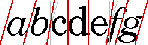

| CONTENTS | PREV | NEXT | Java 2D API |
The TextLayout class supports text that contains multiple styles and characters from different writing systems, including Arabic and Hebrew. (Arabic and Hebrew are particularly difficult to display because you must reshape and reorder the text to achieve an acceptable representation.)TextLayout simplifies the process of displaying and measuring text even if you are working with English-only text. By using TextLayout, you can achieve high-quality typography with no extra effort.
The TextLayout class manages the positioning and ordering of glyphs for you. You can use TextLayout to:
In some situations, you might want to compute the text layout yourself, so that you can control exactly which glyphs are used and where they are placed. Using information such as glyph sizes, kerning tables, and ligature information, you can construct you r own algorithms for computing the text layout, bypassing the system's layout mechanism. For more information, see "Implementing a Custom Text Layout Mechanism".
TextLayout automatically lays out text, including bidirectional (BIDI) text, with the correct shaping and ordering. To correctly shape and order the glyphs representing a line of text, TextLayout must know the full context of the tex t:
- If the text fits on a single line, such as a single-word label for a button or a line in a dialog box, you can construct a TextLayout directly from the text.
- If you have more text than can fit on a single line or want to break text on a single line into tabbed segments, you cannot construct a TextLayout directly. You must use a LineBreakMeasurer to provide sufficient context.
The base direction of the text is normally set by an attribute (style) on the text. If that attribute is missing, TextLayout follows the Unicode bidirectional algorithm and derives the base direction from the initial characters in the paragraph .
TextLayout maintains caret information such as the caret Shape, position, and angle. You can use this information to easily display carets in both monodirectional and bidirectional text. When you're drawing carets for bidirection al text, using TextLayout ensures that the carets will be positioned correctly.TextLayout provides default caret Shapes and automatically supports dual carets. For italic and oblique glyphs, TextLayout produces angled carets, as shown in Figure 4-12. These caret positions are also used as the boundaries between glyphs for highlighting and hit testing, which helps produce a consistent user experience.

Given an insertion offset, the getCaretShapes method returns a two-element array of Shapes: element 0 contains the strong caret and element 1 contains the weak caret, if one exists. To display dual carets, you simply draw both caret Shapes; the carets will be automatically be rendered in the correct positions.If you want to use custom caret Shapes, you can retrieve the position and angle of the carets from the TextLayout and draw them yourself.
In the following example, the default strong and weak caret Shapes are drawn in different colors. This is a common way to differentiate dual carets.
Shape[] caretShapes = layout.getCaretShapes(hit);
g2.setColor(PRIMARY_CARET_COLOR);
g2.draw(caretShapes[0]);
if (caretShapes[1] != null){
g2.setColor(SECONDARY_CARET_COLOR);
g2.draw(caretShapes[1]);
}
You can also use TextLayout to determine the resulting insertion offset when a user presses the left or right arrow key. Given a TextHitInfo object that represents the current insertion offset, the getNextRightHit method r eturns a TextHitInfo object that represents the correct insertion offset if the right arrow key is pressed. The getNextLeftHit method provides the same information for the left arrow key.In the following example, the current insertion offset is moved in response to a right arrow key.
TextHitInfo newInsertionOffset =
layout.getNextRightHit(insertionOffset);
if (newInsertionOffset != null) {
Shape[] caretShapes =
layout.getCaretShapes(newInsertionOffset);
// draw carets
...
insertionOffset = newInsertionOffset;
}
TextLayout provides a simple mechanism for hit testing text. The hitTestChar method takes x and y coordinates from the mouse as arguments and returns a TextHitInfo object. The TextHitInfo conta ins the insertion offset for the specified position and the side that the hit was on. The insertion offset is the offset closest to the hit: if the hit is past the end of the line, the offset at the end of the line is returned.In the following example, hitTestChar is called on a TextLayout and then getInsertIndex is used to retrieve the offset.
TextHitInfo hit = layout.hitTestChar(x, y); int insertIndex = hit.getInsertIndex();
You can get a Shape that represents the highlight region from the TextLayout. TextLayout automatically takes the context into account when calculating the dimensions of the highlight region. TextLayout supports both logical and visual highlighting.In the following example, the highlight region is filled with the highlight color and then the TextLayout is drawn over the filled region. This is one simple way to display highlighted text.
Shape highlightRegion = layout.getLogicalHighlightShape(hit1, hit2); graphics.setColor(HIGHLIGHT_COLOR); graphics.fill(highlightRegion); graphics.drawString(layout, 0, 0);
TextLayout provides access to graphical metrics for the entire range of text it represents. Metrics available from TextLayout include the ascent, descent, leading, advance, visible advance, and the bounding rectangle.More than one Font can be associated with a TextLayout: different style runs can use different fonts. The ascent and descent values for a TextLayout are the maximum values of all of the fonts used in the TextLayout. The computation of the TextLayout's leading is more complicated; it's not just the maximum leading value.
The advance of a TextLayout is its length: the distance from the left edge of the leftmost glyph to the right edge of the rightmost glyph. The advance is sometimes referred to as the total advance. The visible advance is the l ength of the TextLayout without its trailing whitespace.
The bounding box of a TextLayout encloses all of the text in the layout. It includes all the visible glyphs and the caret boundaries. (Some of these might hang over the origin or origin + advance). The bounding box is relative to the origin of the TextLayout, not to any particular screen position.
In the following example, the text in a TextLayout is drawn within the layout's bounding box.
graphics.drawString(layout, 0, 0);
Rectangle2D bounds = layout.getBounds();
graphics.drawRect(bounds.getX()-1, bounds.getY()-1,
bounds.getWidth()+2, bounds.getHeight()+2);
TextLayout can also be used to display a piece of text that spans multiple lines. For example, you might take a paragraph of text, line-wrap the text to a certain width, and display the paragraph as multiple lines of text.To do this, you do not directly create the TextLayouts that represent each line of text--LineBreakMeasurer generates them for you. Bidirectional ordering cannot always be performed correctly unless all of the text in a paragr aph is available. LineBreakMeasurer encapsulates enough information about the context to produce correct TextLayouts.
When text is displayed across multiple lines, the length of the lines is usually determined by the width of the display area. Line breaking (line wrapping) is the process of determining where lines begin and end, given a graphical width in which the lines must fit.
The most common strategy is to place as many words on each line as will fit. This strategy is implemented in LineBreakMeasurer. Other more complex line break strategies use hyphenation, or attempt to minimize the differences in line length with in paragraphs. The Java 2DTM API does not provide implementations of these strategies.
To break a paragraph of text into lines, you construct a LineBreakMeasurer with the entire paragraph and then call nextLayout to step through the text and generate TextLayouts for each line.
To do this, LineBreakMeasurer maintains an offset within the text. Initially, the offset is at the beginning of the text. Each call to nextLayout moves the offset by the character count of the TextLayout that was created. When this offset reaches the end of the text, nextLayout returns null.
The visible advance of each TextLayout that the LineBreakMeasurer creates doesn't exceed the specified line width. By varying the width you specify when you call nextLayout, you can break text to fit complicated areas, such as an HTML page with images in fixed positions or tab-stop fields. You can also pass in a BreakIterator to tell LineBreakMeasurer where valid breakpoints are; if you don't supply one the BreakIterator for the default locale is used.
In the following example, a bilingual text segment is drawn line by line. The lines are aligned to either to the left margin or right margin, depending on whether the base text direction is left-to-right or right-to-left.
Point2D pen = initialPosition;
LineBreakMeasurer measurer = new LineBreakMeasurer(styledText,
myBreakIterator);
while (true) {
TextLayout layout = measurer.nextLayout(wrappingWidth);
if (layout == null) break;
pen.y += layout.getAscent();
float dx = 0;
if (layout.isLeftToRight())
dx = wrappingWidth - layout.getAdvance();
layout.draw(graphics, pen.x + dx, pen.y);
pen.y += layout.getDescent() + layout.getLeading();
}